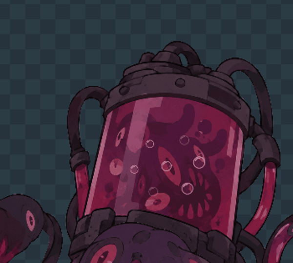
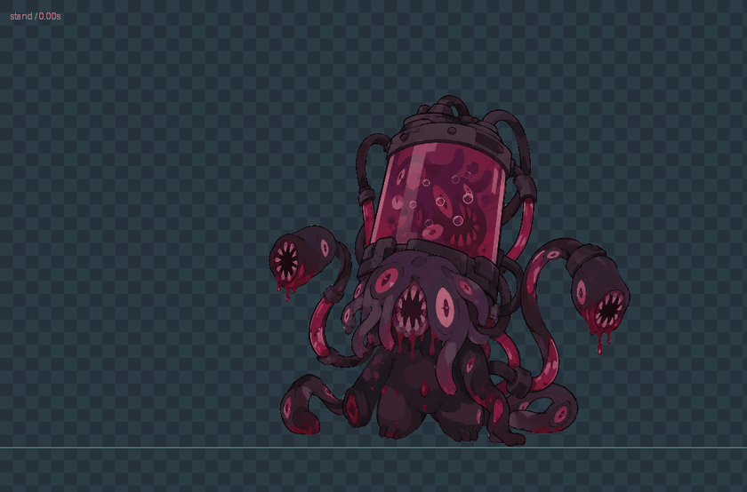
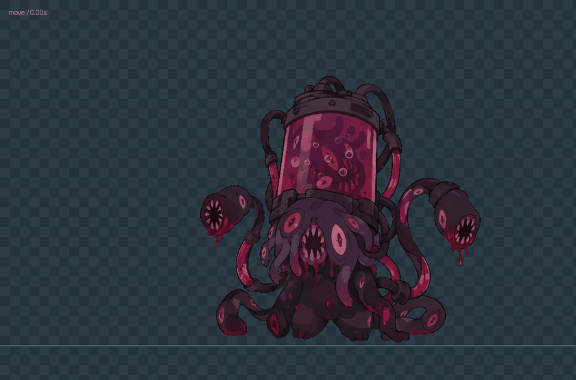
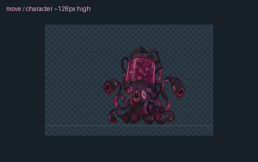
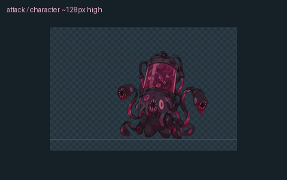
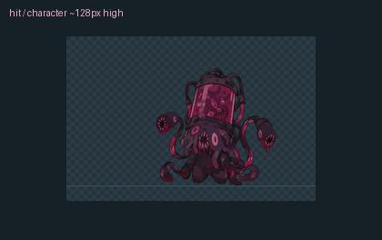
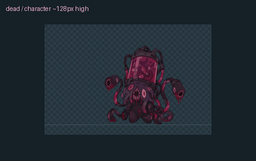

SYCS · 深渊触手与循环气泡罐内气泡近景
8 个透明气泡由下向上浮动，在不可见阶段回到底部；完整待机循环 3.2 秒。

蠕动与呼吸待机 / stand
手机尺寸 / 待机角色约 128px 高
缓慢原地移动 / move
手机尺寸 / 待机角色约 128px 高
触手前抽与气流 / attack手机尺寸 / 待机角色约 128px 高
受击回弹 / hit手机尺寸 / 待机角色约 128px 高
侧倒与触手收拢 / dead手机尺寸 / 待机角色约 128px 高